什麼是 saltstack？
SaltStack 是一種新的基礎設施管理方法開發軟件，簡單易部署，可伸縮的足以管理成千上萬的服務器，和足夠快的速度控制。SaltStack 提供了一個動態基礎設施通信總線用於編排,遠程執行、配置管理等等。
saltstack 有三種架構，本文章先介紹第一種架構 master → minion 這種架構中 master 和所有 minion 都直接連接，minion 接收來自 master 的指令，完成命令執行或配置管理，如下圖所示
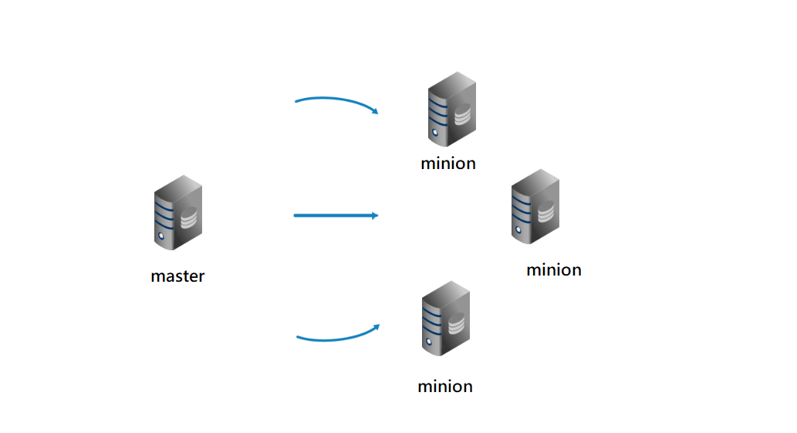
一、安裝 saltstack master ubuntu 16.04
更新
1 | apt-get update |
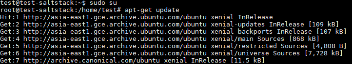
安裝
1 | apt-get -y install salt-master |
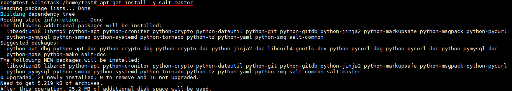
二、安裝 saltstack minion ubuntu 16.04
安裝
1 | apt-get -y install salt-minion |
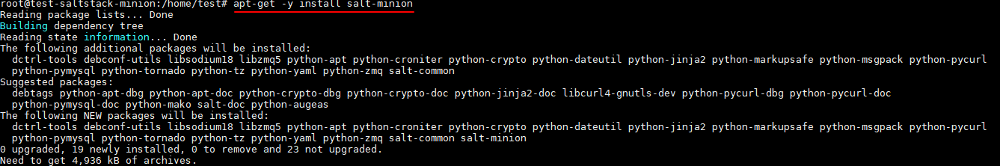
配置 config
1 | cd /etc/salt ( 進入 config 位置 ) |
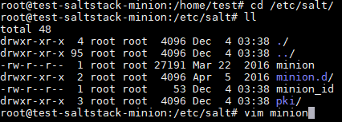
設定：輸入 master IP 讓 master 找的到 minion
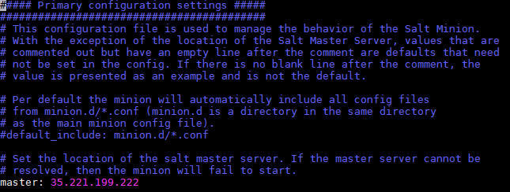
設定：minion ID
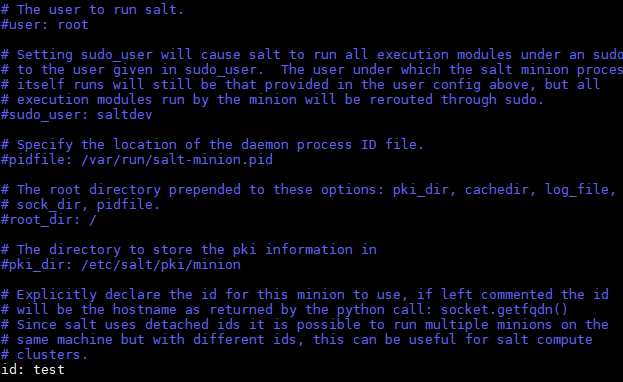
重啟服務
1 | service salt-minion restart |
查看服務是否重啟成功
1 | service salt-minion status |
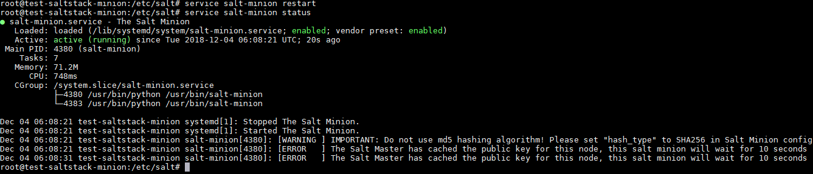
三、saltstack master 接受 saltstack minion 金鑰
輸入指令檢查 minion 金鑰，還未加入金鑰會顯示紅色，名稱為 config 設定的 ID
1 | salt-key -L ( L 一定要大寫 ) |
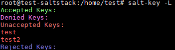
PS.下圖是沒有接收到任何金鑰畫面
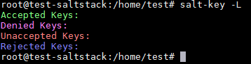
加入 minion 金鑰 ( 二種加入指令 )
1.全部加入：只要在列表內都會加入金鑰
1 | salt-key -A ( A 一定要大寫 ) |
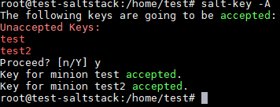
檢查加入成功金鑰會顯示綠色
1 | salt-key -L |
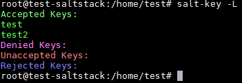
2.單個加入：指定特定機器 name 單獨加入金鑰
1 | salt-key -a name ( a 一定要小寫 ) |
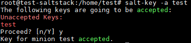
檢查加入成功金鑰會顯示綠色
1 | salt-key -L |
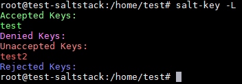
3.刪除金鑰
1 | salt-key -d name ( d 一定要小寫 ) |
ps.刪除後列表金鑰就會不見，需要到 minion 重啟服務才能再重新加入，更改 ID 也需要重啟服務名稱才會改變
四、安裝 saltstack minion windows
下載安裝包：https://docs.saltstack.com/en/latest/topics/installation/windows.html
開始安裝
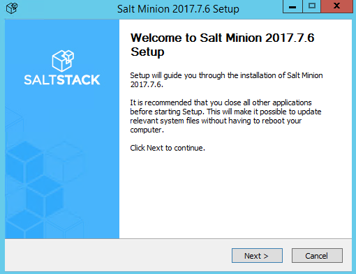
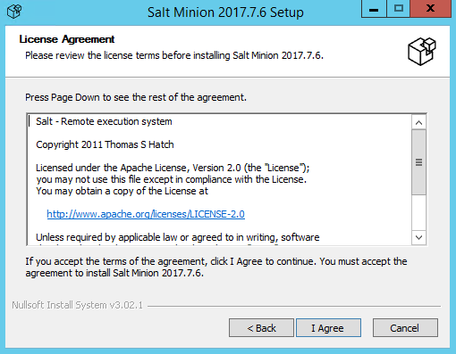
設定 IP 和 ID
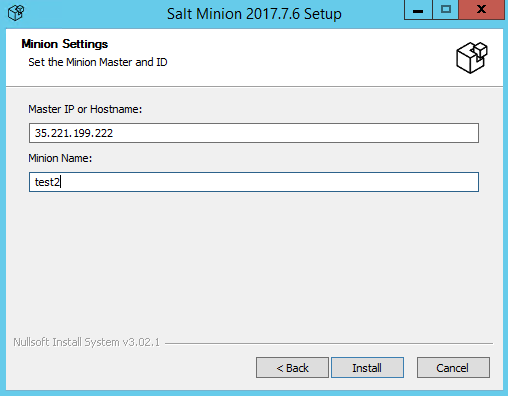
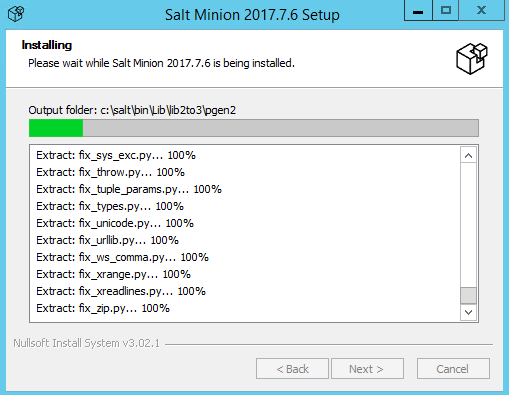
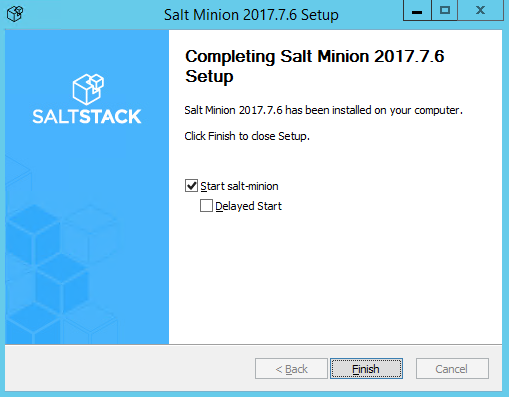
安裝好後如果想更改 IP 或是 ID 可已到路徑 C:/salt/conf 的 minion 更改
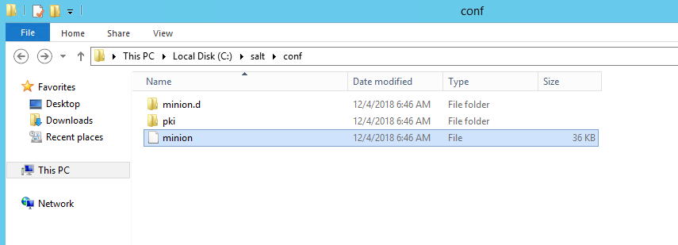
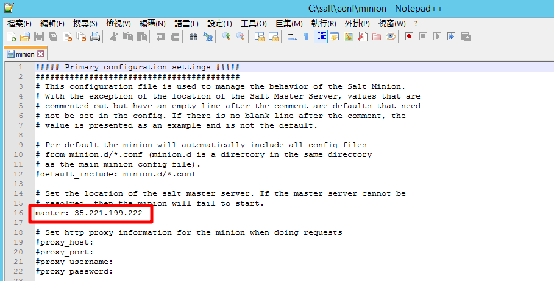
做更改一樣要重啟服務，搜尋 → services.msc
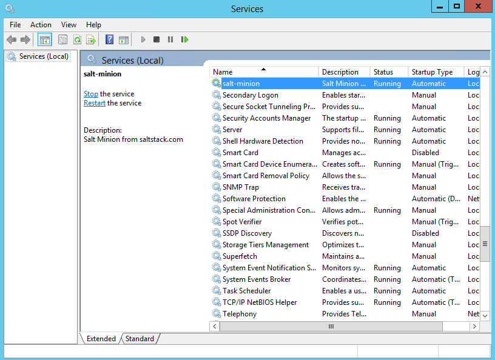
五、測試
輸入指令測試 ping minion
1 | salt '*' test.ping ( * 是全部 ) |
ping 全部
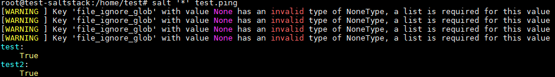
ping 單獨
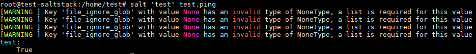
也可以做成腳本
1 | vim test ( 創一個隨意文件 ) |
腳本內容第一行 #!/bin/bash 必要，接下來為操控指令可以隨意更換，ex：salt ‘test’ cmd.run ‘shutdown -r -t 0’ 此為 windows 重啟指令，可直接下或做成腳本
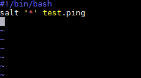
加權限
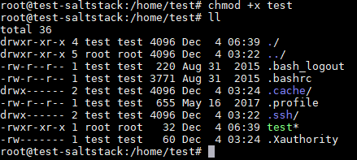
執行測試
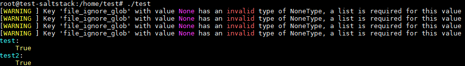